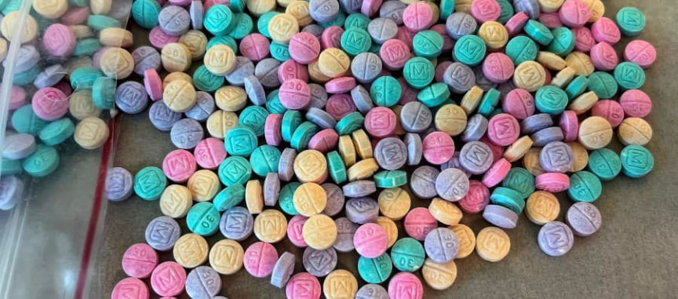
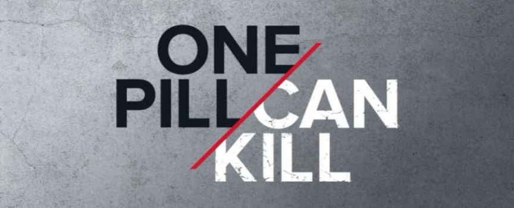
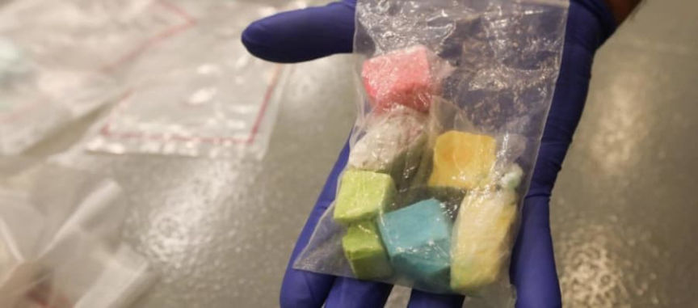
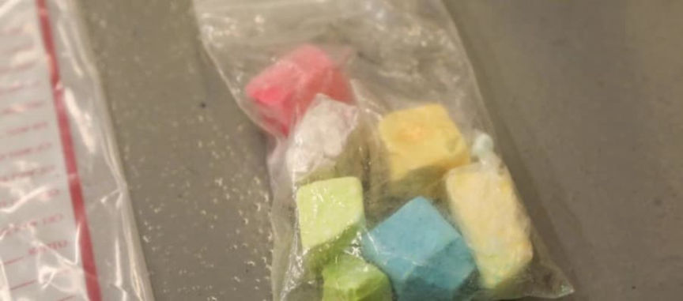
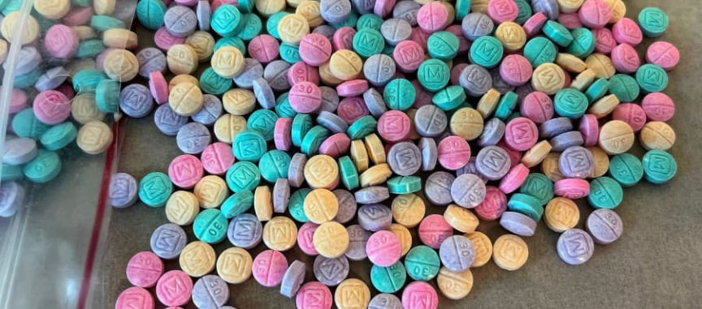
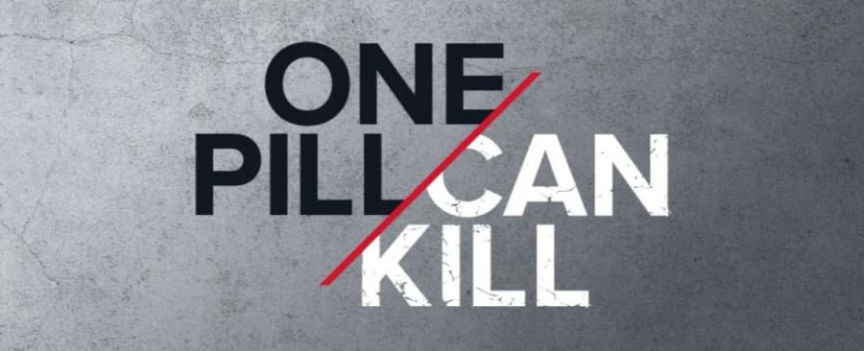
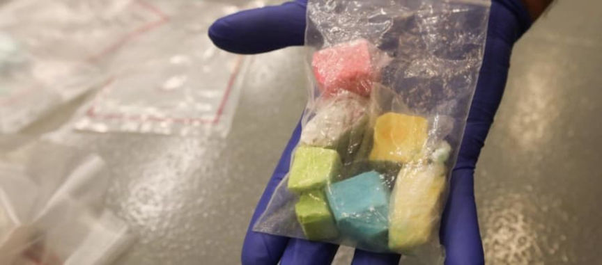
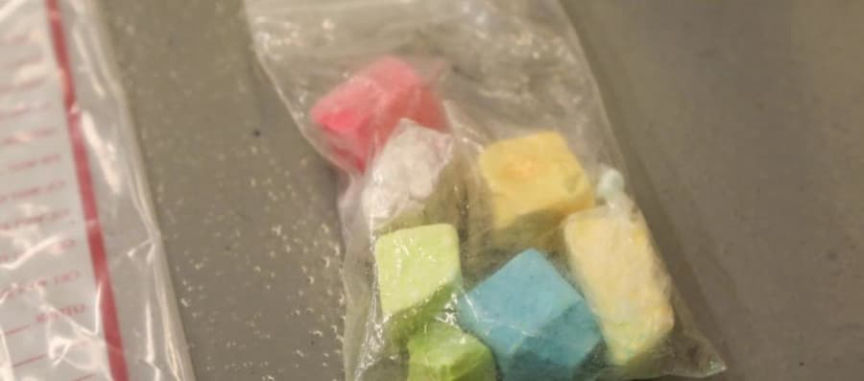

DEA Has Seized Almost 1,000 Pounds of Fentanyl in 2022
Between May and September 2022, law enforcement agencies in the United States seized more than 10.2 million fentanyl pills and “980 pounds of fentanyl powder.”
According to a press release from the U.S. Attorney’s Office for the Southern District of Indiana, the Drug Enforcement Administration and its law enforcement partners seized more than 10.2 million fentanyl pills and approximately 980 pounds of fentanyl powder between May 23 through September 8, 2022. Authorities believe they removed more than 36 million lethal doses from the drug supply during the operation.

“Across the country, fentanyl is devastating families and communities, and we know that violent, criminal drug cartels bear responsibility for this crisis,” said Attorney General Merrick B. Garland. “The Justice Department, including the extraordinary professionals of the DEA, is working to disrupt and dismantle the operations of these cartels, remove deadly fentanyl from our communities, and save Americans’ lives.”

The seizures were part of the DEA’s One Pill Can Kill initiative. During the period, law enforcement officers investigated 390 cases, including 51 cases linked to overdoses. Two Mexican cartels, the Sinaloa Cartel and the Jalisco New Generation Cartel (CJNG) are responsible for most of the fentanyl in the United States. Of the 390 investigated cases, 31 are linked to either or both cartels. One hundred twenty-nine investigations are linked to social media platforms, including Snapchat, Facebook Messenger, Instagram, and TikTok. Additionally, police officers seized 338 weapons during the operation, including firearms and [em]hand grenades[/em].

“Drug overdose deaths touch every Hoosier—our families, our friends, our children. These tragedies are overwhelmingly driven by trafficking of fentanyl and other deadly opioids,” said Zachary A. Myers, United States Attorney for the Southern District of Indiana. “Fentanyl is concealed in everything from fake pharmaceuticals to rainbow candy-colored pills, and even within other controlled substances. The cartels and drug traffickers push these poisonous chemicals into our communities with utter disregard for human life. The U.S. Attorney’s Office will work with our partners in the DEA and throughout federal, state, and local law enforcement, to reduce the supply of these deadly drugs and hold fentanyl traffickers accountable.”

“Fentanyl remains the deadliest drug threat facing this nation. In 2021, a record number of Americans – 107,622 – died from a drug poisoning or overdose. Sixty-six percent of those deaths can be attributed to synthetic opioids such as fentanyl. According to the Indiana Department of Health, 2,554 Hoosiers died of drug overdoses in 2021 and over 70% of the deaths were caused by fentanyl and other synthetic opioids. Between January 1 and August 1, 2022, over 2,500 Hoosiers have been lost to drug overdoses, the vast majority from fentanyl and similar drugs.”
U.S. Attorney’s Office and Department of Justice Announce Results of Efforts to Reduce Fentanyl Supply and Prosecute Fentanyl Traffickers | www.justice.gov, archive.is, archive.org
According to a press release from the U.S. Attorney’s Office for the Southern District of Indiana, the Drug Enforcement Administration and its law enforcement partners seized more than 10.2 million fentanyl pills and approximately 980 pounds of fentanyl powder between May 23 through September 8, 2022. Authorities believe they removed more than 36 million lethal doses from the drug supply during the operation.

Rainbow fentanyl—fentanyl pills and powder that come in a variety of bright colors, shapes, and sizes | DEA
“Across the country, fentanyl is devastating families and communities, and we know that violent, criminal drug cartels bear responsibility for this crisis,” said Attorney General Merrick B. Garland. “The Justice Department, including the extraordinary professionals of the DEA, is working to disrupt and dismantle the operations of these cartels, remove deadly fentanyl from our communities, and save Americans’ lives.”

One Pill Can Kill
The seizures were part of the DEA’s One Pill Can Kill initiative. During the period, law enforcement officers investigated 390 cases, including 51 cases linked to overdoses. Two Mexican cartels, the Sinaloa Cartel and the Jalisco New Generation Cartel (CJNG) are responsible for most of the fentanyl in the United States. Of the 390 investigated cases, 31 are linked to either or both cartels. One hundred twenty-nine investigations are linked to social media platforms, including Snapchat, Facebook Messenger, Instagram, and TikTok. Additionally, police officers seized 338 weapons during the operation, including firearms and [em]hand grenades[/em].

Rainbow fentanyl in plastic bag | Multnomah County Sheriff
“Drug overdose deaths touch every Hoosier—our families, our friends, our children. These tragedies are overwhelmingly driven by trafficking of fentanyl and other deadly opioids,” said Zachary A. Myers, United States Attorney for the Southern District of Indiana. “Fentanyl is concealed in everything from fake pharmaceuticals to rainbow candy-colored pills, and even within other controlled substances. The cartels and drug traffickers push these poisonous chemicals into our communities with utter disregard for human life. The U.S. Attorney’s Office will work with our partners in the DEA and throughout federal, state, and local law enforcement, to reduce the supply of these deadly drugs and hold fentanyl traffickers accountable.”

A different picture of the same rainbow fentanyl | Multnomah County Sheriff
“Fentanyl remains the deadliest drug threat facing this nation. In 2021, a record number of Americans – 107,622 – died from a drug poisoning or overdose. Sixty-six percent of those deaths can be attributed to synthetic opioids such as fentanyl. According to the Indiana Department of Health, 2,554 Hoosiers died of drug overdoses in 2021 and over 70% of the deaths were caused by fentanyl and other synthetic opioids. Between January 1 and August 1, 2022, over 2,500 Hoosiers have been lost to drug overdoses, the vast majority from fentanyl and similar drugs.”
U.S. Attorney’s Office and Department of Justice Announce Results of Efforts to Reduce Fentanyl Supply and Prosecute Fentanyl Traffickers | www.justice.gov, archive.is, archive.org